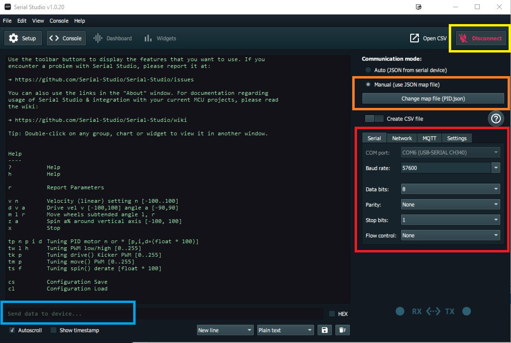
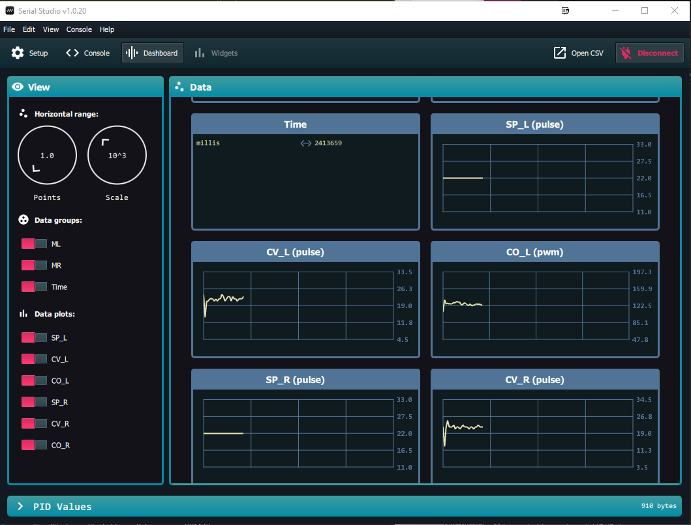

|
Smart Car Controller
1.0
Library to manage a two wheeled robotic vehicle (DC Motors)
|
|
Smart Car Controller
1.0
Library to manage a two wheeled robotic vehicle (DC Motors)
|
The next step is to use the Calibrate example sketch and the SerialStudio application (found at https://www.alex-spataru.com/serial-studio.html) to determine the motor control PID parameters. The IDE Serial Monitor can be used to view the raw numbers output from the library whilst tuning the PID loop; SerialStudio provides superior data visualization and an easier tuning process.
Calibrate allows the vehicle motors to be controlled through the Serial Monitor using a command line interface (CLI) to invoke test the functions (type ? for help text listing the functions). SerialStudio replaces the IDE Serial Monitor and adds real-time graphical plots of the PID control parameters.
Whilst setting parameters, it is a good idea to save to EEPROM using the CLI when a good set of Kp, Ki and Kd parameters are found. The saved parameters can be reloaded from EEPROM at any time, especially when changes make the PID tuning worse.

SerialStudio has the same input functionality as the Serial Monitor. You can type commands to the vehicle application using the console input box (light blue highlight). The figure shows the result of the '?' command (help text).
Once SerialStudio is set up, starting the motors from the console will automatically switch to a graphical dashboard view, shown below. This allows you to visualize the effects of changes to the speed setpoints and/or the PID parameters. You can switch between console and dashboard views using the menu options at the top of the window.
Parameters shown are Set Point (SP), Current Value (CV) and control Output (CO) for the Left and Right motors.

The default PID values in the SmartCar_HW header file should be a good starting point for the PID motor settings - expect to have a high Kp, no Ki and a relatively small Kd (this is really a PD controller). PID values can be set independently for Left and Right motors if required. In most cases the same PID setup for both motors should be adequate.
Once you are happy with the performance of the PID control loop, save the parameters to EEPROM.
Next: Testing with Remote Control